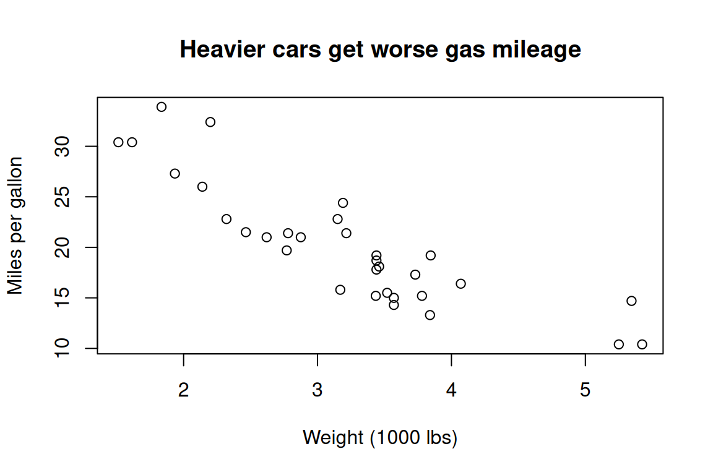

Lesson 1 of 7 · Course overview
R is a free programming language built specifically for working with data. Pretty much every statistical method you’ve heard of has an R implementation, and a lot of them were first implemented in R. The graphics are excellent, the package ecosystem is huge, and you can use it for everything from a one-off plot to a peer-reviewed publication.
This lesson covers four things:
R is two things at once: a programming language and
an interactive environment. You can type
2 + 2 at the prompt and get 4 back, just like
a calculator. Or you can write a 500-line script that loads a CSV, fits
a model, and produces a PDF report.
R was created in the early 1990s by statisticians at the University of Auckland, and it shows: the language has built-in support for vectors, missing values, factors, and other things that statisticians care about. It’s very good at “load a table, do something to every row, summarise the result.” It’s less great at writing a video game.
R is open source. Anyone can use it, anyone can contribute packages, and the Comprehensive R Archive Network (CRAN) hosts more than 20,000 add-on packages — for everything from genomics to finance to natural language processing.
You’ll hear “R or Python?” a lot. Honest answer: both are fine, you can do almost anything in either, and most working data scientists use both. R has the edge for statistics, reporting, and visualization out of the box. Python has the edge for general programming, web apps, and most of modern machine learning. If you already know Python, R will feel quirky for a week and then second-nature.
You need two things: R itself (the engine) and RStudio (a much nicer place to write R code than the bare R console).
When you open RStudio for the first time, you should see a window
with several panes. If you see a > prompt in one of
them, you’re good to go.
RStudio is just an editor — it runs R for you. If you uninstall R, RStudio breaks. If you install a new version of R, RStudio will pick it up automatically.
By default RStudio shows four panes:
A few keyboard shortcuts that pay for themselves immediately:
| Shortcut | What it does |
|---|---|
| Cmd/Ctrl + Enter | Run the current line (or selection) from the script |
| Cmd/Ctrl + Shift + N | New R script |
| Cmd/Ctrl + Shift + M | Insert the pipe operator (|>) |
| Alt + - | Insert the assignment operator (<-) |
| Cmd/Ctrl + L | Clear the console |
Let’s actually run some R. In RStudio, hit Cmd/Ctrl + Shift + N to open a new script. Type the following (don’t paste — really type it):
greeting <- "Hello, R!"
greeting## [1] "Hello, R!"2 + 2## [1] 4sqrt(144)## [1] 12Place your cursor on the first line and hit Cmd/Ctrl + Enter. The line gets sent to the console. Do it for each line. You should see:
greeting was assigned the value
"Hello, R!" and now appears in the Environment pane.2 + 2 prints 4.sqrt(144) prints 12.A few things to notice:
<- is R’s assignment operator. You can use
= too, but <- is the convention. Use the
Alt + - shortcut.# on a line is a comment — R ignores
it.sqrt(144),
mean(c(1, 2, 3)). Without the parentheses, R prints the
function’s source code instead of running it.Save the script with Cmd/Ctrl + S.
Call it hello.R. Now you have your first R script.
R’s superpower is its packages. A package is a bundle of functions and data someone else wrote. To use one, you install it once and then load it whenever you need it.
install.packages("dplyr")
library(dplyr)install.packages("dplyr") downloads and installs the
dplyr package from CRAN. You only need to do this once per
machine.library(dplyr) loads it into your current session, so
its functions are available. You do this every session.You can also call a function from a package without loading the whole
package by using :::
dplyr::filter(mtcars, mpg > 25)This is helpful when you only need one function or want to be explicit about where it came from. We’ll use it occasionally throughout the course.
The packages we’ll use the most:
dplyr and tidyr — data manipulationggplot2 — plottingreadr — reading CSVsrmarkdown and knitr — reproducible
reportsYou can install them all at once with the tidyverse
umbrella package:
install.packages("tidyverse")When (not if) you forget how a function works, R has built-in help. Three ways to get it:
?mean
help("mean")
example("mean")The help page opens in the bottom-right pane. Every help page has the same sections: Description, Usage, Arguments, Value, Examples. The Examples section is gold — copy them, run them, modify them.
If you don’t even know the name of the function you want,
?? does a fuzzy search across all installed packages:
??"linear regression"And of course, Stack Overflow, the Posit Community forum, and now LLMs are all good for “how do I…” questions.
Here’s a tiny script that uses everything you just learned: a
built-in dataset (mtcars — fuel efficiency for 32 cars from
1974), a function call, and a quick plot.
head(mtcars)## mpg cyl disp hp drat wt qsec vs am gear carb
## Mazda RX4 21.0 6 160 110 3.90 2.620 16.46 0 1 4 4
## Mazda RX4 Wag 21.0 6 160 110 3.90 2.875 17.02 0 1 4 4
## Datsun 710 22.8 4 108 93 3.85 2.320 18.61 1 1 4 1
## Hornet 4 Drive 21.4 6 258 110 3.08 3.215 19.44 1 0 3 1
## Hornet Sportabout 18.7 8 360 175 3.15 3.440 17.02 0 0 3 2
## Valiant 18.1 6 225 105 2.76 3.460 20.22 1 0 3 1mean(mtcars$mpg)## [1] 20.09plot(mtcars$wt, mtcars$mpg,
main = "Heavier cars get worse gas mileage",
xlab = "Weight (1000 lbs)",
ylab = "Miles per gallon")
If you typed that in and got a similar plot back, you’re in business.
Open a new R script in RStudio and write code that:
me.age.age * 365 (your age in
days, roughly).me <- "Cavan"
age <- 30
me## [1] "Cavan"age## [1] 30age * 365## [1] 10950R has a function called seq() that you’ve never seen
before. Without searching the web, figure out what it does and use it to
generate the numbers from 0 to 1 in steps of 0.1.
Run ?seq to open the help page. The relevant arguments
are from, to, and by:
seq(from = 0, to = 1, by = 0.1)## [1] 0.0 0.1 0.2 0.3 0.4 0.5 0.6 0.7 0.8 0.9 1.0You can also write it more compactly — R uses positional arguments:
seq(0, 1, 0.1)## [1] 0.0 0.1 0.2 0.3 0.4 0.5 0.6 0.7 0.8 0.9 1.0You can now run R, you have RStudio set up, and you know how to install packages and ask R for help. That’s the whole runway. Next up: actually doing things with R.